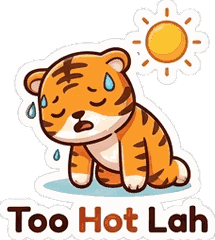

Go-out score
–/10
Loading…
Weekly schedule from Time Out, KL Foodie, The Star and others. Days can change in heavy rain or on public holidays.
Local favourites only, no big chains. Opening hours can change, so check before you go.
Remy here. Jom! Every show below links to its official ticket page.
Every event links straight to its official ticket page.
Rail here. Trains beat KL jams most evenings. Check alerts before you go.
🚆 Train updates
🚗 Traffic now
The traffic map is live from Waze. Train notices come straight from the operators; we don't run our own live train feed.
Duke here. Need a break from the city? Pick a spot, then tap Directions.
🧡 About JomOut KL
Your local friend who knows Kuala Lumpur and tells you where to go, right now. KL has endless options and no time to sift through them, so JomOut KL cuts the noise: live weather, tonight's night markets, real events and good food near you, for locals, tourists and expats alike.
Built by a KL local tired of group chats asking "where to eat?" every single day.
✅ How we keep it honest
Every event links straight to its official ticket page, and anything we can’t double-check stays off the list. Weather is live. Big chains are left out so you find the local spots. Spotted something wrong? Tell us below.
Meet the JomOut gang
Remy
the tiger who says Jom!
the tiger who says Jom!
Nala
nasi lemak, food guide
nasi lemak, food guide

Taffyiced teh tarik
Skye
satay, night markets
satay, night markets
Lola
laksa, lunch
laksa, lunch
Dimi
dim sum, late night
dim sum, late night
Kay
kaya toast, breakfast
kaya toast, breakfast
Duke
durian, day trips
durian, day trips
Rail
LRT, getting around
LRT, getting around
KL glossary
JomOut KL is independent. Not affiliated with Rapid KL, DBKL or Tourism Malaysia.